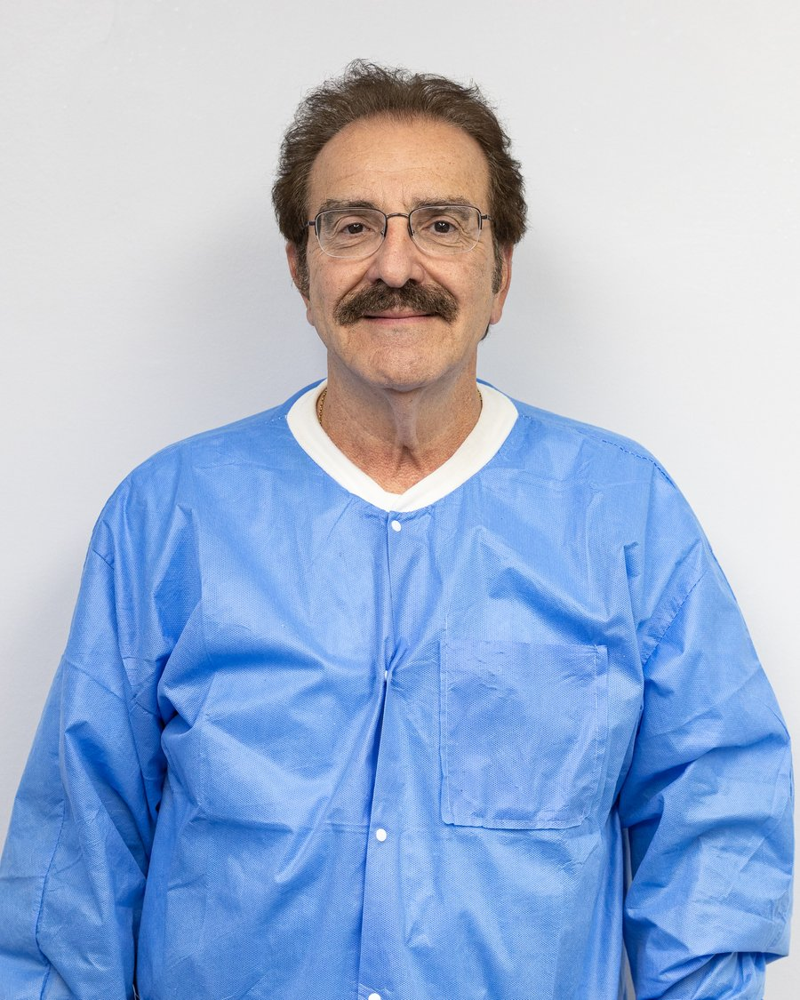

Our Team
Meet Our Doctors
Experienced, compassionate dentists committed to lifelong learning and personalized care — proudly serving Pittsburgh families for over 15 years.
Dr. Kyros and Dr. Ahmed are dedicated to lifelong learning through continuing education courses. They make every effort to stay abreast of the most current dental techniques and deliver the highest quality of care to every patient.

Dr. James Kyros
D.M.D. · Master, Academy of General Dentistry
Dr. Kyros is an honors graduate of the University of Pittsburgh School of Dental Medicine, where he received first-rate training in all aspects of general dentistry. After completing his degree, he completed a General Practice Residency at the Veterans Administration Hospital in Oakland, further deepening his clinical expertise.
Through a combination of state-of-the-art technology, sensible treatment plans, and genuine devotion to each patient's unique needs, Dr. Kyros preserves healthy teeth and gums, alleviates oral discomfort, and improves the appearance of smiles every day.
His unique blend of artistic and technical skill has produced durable, aesthetic results for thousands of patients throughout the Pittsburgh area.
Education & Training
Credentials
Areas of Focus

Dr. Meer Ahmed
D.M.D., M.Sc. · RCPSG Member
Dr. Meer Ahmed has been in dentistry for over 15 years. He is a friendly and dedicated general dentist with a genuine passion for getting to know each patient and delivering excellent, individualized care. Dr. Ahmed believes in a personalized approach to every visit and actively involves patients in their treatment decisions.
Before joining Brookline Family Dentistry, Dr. Ahmed completed his dental education in India and earned postgraduate credentials from the Royal College of Physicians and Surgeons of Glasgow, UK. He then honed his clinical skills in renowned hospitals across the Middle East before immigrating to the United States to complete his Master's and Doctorate at the University of Pittsburgh School of Dental Medicine — graduating with multiple awards and honors.
Dr. Ahmed makes every effort to stay current through continuous education and remains an active member of several international dental organizations. He educates patients on maintaining not only a healthy smile, but a healthy body overall.
Education & Training
Professional Memberships
Clinical Expertise
Ready to meet our team in person?
We welcome new patients of all ages. Call us or request an appointment online — we'd love to welcome you to the Brookline Family.